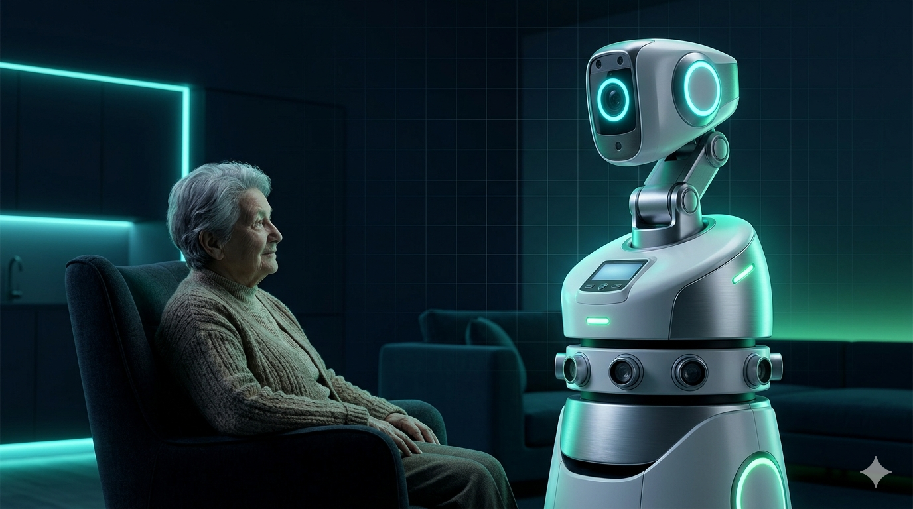

Companion Assistive Robot for the Aged — a documentary on building a low-cost robot for elderly care in Sri Lanka.

Sri Lanka's elderly population is growing faster than the care infrastructure built to support it. By 2041, one in four Sri Lankans will be over 60 — yet thousands of working-age adults have migrated abroad in search of better incomes, leaving elderly parents living alone in family homes across the island.
For these individuals, the risks are real and daily: a fall with no one nearby to call for help, a medication dose missed without anyone to notice, days passing without a family member knowing if everything is alright. In rural areas, professional care services are scarce, and internet connectivity is often unreliable or absent entirely.
"The combination of rapid ageing, working-age migration, and limited connectivity creates a care gap that technology — designed specifically for this context — could meaningfully narrow." — Research motivation, Thesis Chapter 1
Existing assistive robots address some of these challenges, but not in ways accessible to families in developing countries. They cost between $5,000 and $100,000, require continuous Wi-Fi, and were designed for high-income, well-connected environments. None of them were built with Sri Lanka's realities in mind.
Read the full literature review →CARA is not designed to be the most advanced robot — it is designed to be the most useful robot for a specific context. Every decision in the design flows from three constraints that were set at the outset and never compromised.
The complete bill of materials — every sensor, motor, processor, and cable — must cost under $500 USD. This is not a stretch goal; it is the boundary that determines whether the system is accessible to middle-income families in Sri Lanka or only to research institutions. Every hardware decision is evaluated against this constraint first.
All safety-critical functions — fall detection alerts, medication reminders, daily check-ins — operate entirely over GSM cellular. Wi-Fi is deliberately excluded from every safety path, not as a fallback but as the primary design choice. GSM coverage is broadly available across Sri Lanka's rural and semi-urban areas even where broadband is not.
CARA must monitor, detect, and alert without ever requiring the elderly user to press a button, speak a command, or understand how the system works. If the robot only works when the user actively engages with it, it fails the moment the user is cognitively impaired, frightened, or simply unconscious after a fall.
CARA integrates 15 capabilities across a dual-controller platform: an NVIDIA Jetson Nano handles AI and computer vision while an Arduino Mega 2560 manages all real-time peripherals. Here are the four things CARA does that matter most.
MediaPipe Pose Estimation runs at 12–15 fps on the Jetson Nano's GPU. When hip and shoulder positions match a fall pattern for two continuous seconds, CARA triggers an alert — with no wearable device required from the user.
A SIM800L GSM module sends text message alerts to registered family members within 30 seconds of a confirmed fall, a missed medication, or a daily check-in failure — all over the cellular network, with no Wi-Fi required.
12 ultrasonic sensors provide 360° obstacle awareness. CARA follows its registered user through rooms using a combination of PIR motion detection and computer vision colour tracking, stopping safely at 20 cm from any object.
A real-time clock triggers audible reminders at four set times daily. The user confirms by tapping an RFID tag — embedded in the medication box lid — to the robot. If no confirmation arrives in 15 minutes, a GSM alert is sent automatically.
This documentary site covers every aspect of the CARA project — from the initial research question to the hardware components and weekly build notes.
The development blog tracks weekly progress as CARA moves from design to a working prototype.
Implementing HSV orange-band tracking for Layer 2 of the person-lock system. Challenges with indoor lighting variation and the tuning approach that achieved reliable tracking across different room conditions.